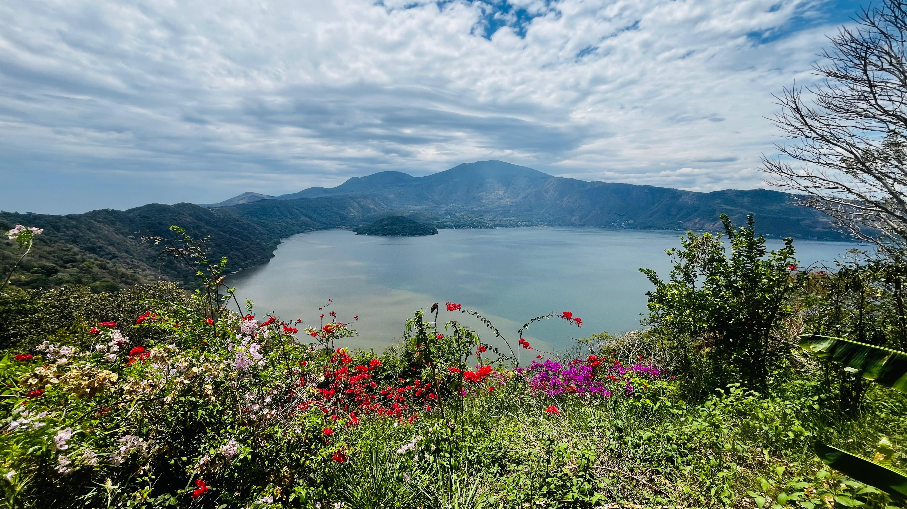
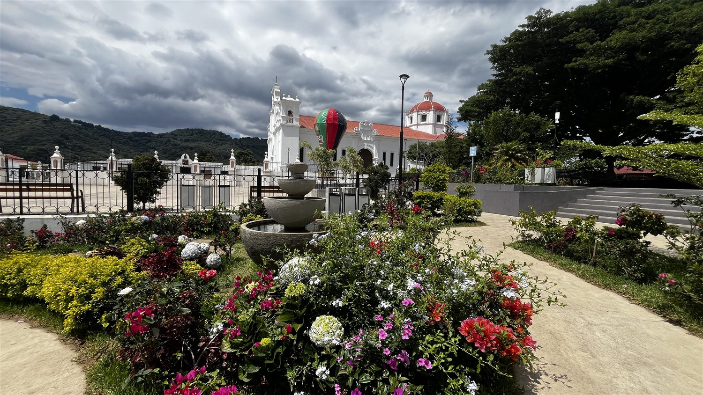
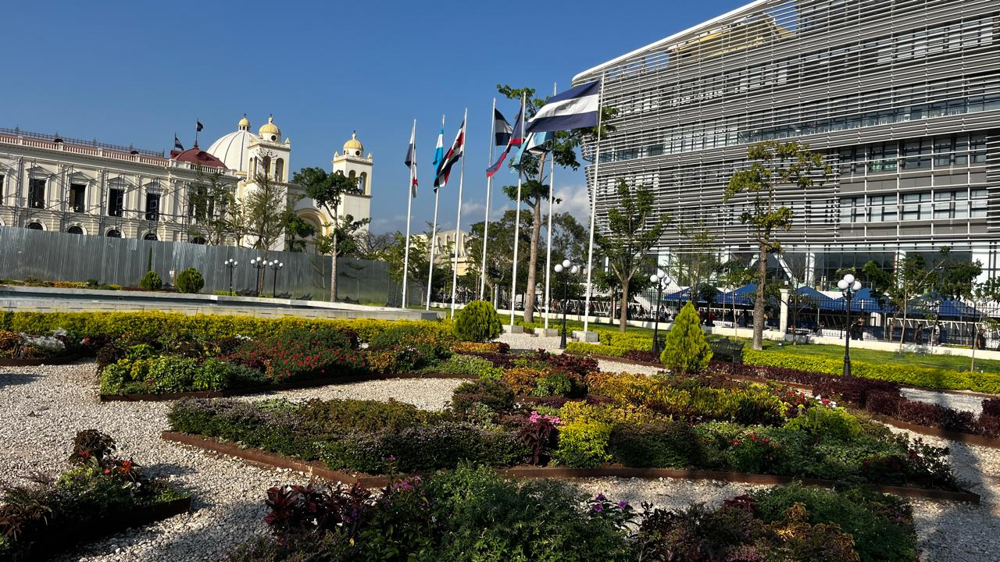

Nuestra Trayectoria
Detrás de Cada Sendero, una Historia de Pasión y Confianza
Compartiendo la auténtica riqueza cultural y natural de El Salvador con viajeros de todo el mundo.

El punto de partida
Conoce al fundador
Nací en San Salvador, El Salvador, un país que desde temprana edad despertó en mí una profunda admiración por su historia, cultura y riqueza natural. Mi trayectoria profesional en el turismo ha estado marcada por una pasión constante por compartir experiencias auténticas con viajeros de todo el mundo.
Viví en Brasil durante los períodos 1983-1995 y 2016-2024, donde amplié mis conocimientos sobre la industria turística y obtuve las credenciales oficiales como guía de turismo en el Estado de Sergipe. Esta experiencia internacional me permitió desarrollar una visión más amplia del turismo y fortalecer mis habilidades para la atención de visitantes de diferentes culturas y nacionalidades.
Desde 1999 me he desempeñado profesionalmente en el sector turístico tanto en El Salvador como en Brasil. Entre 2001 y 2016 fundé y dirigí una operadora turística en El Salvador, logrando posicionarla entre las mejores del país y alcanzando el reconocimiento de los viajeros en Tripadvisor, donde fue calificada como la número uno en su categoría. Estos años de trabajo me permitieron acumular una valiosa experiencia en la creación de recorridos, atención al cliente y desarrollo de productos turísticos de alta calidad.
En 2024 regresé a mi país natal para iniciar una nueva etapa con la fundación de El Salvador Trails (Senderos de El Salvador), un proyecto que nace con la misma pasión y entusiasmo que inspiraron mi primera empresa turística el 1 de julio de 2001. Hoy, con una visión renovada, busco crear nuevas rutas, experiencias y aventuras que permitan a cada visitante descubrir la extraordinaria historia, cultura, gastronomía y naturaleza de El Salvador y Centroamérica.
Bienvenidos a El Salvador Trails, donde cada sendero cuenta una historia y cada experiencia se convierte en una aventura inolvidable.
El Sendero
Cada parada de este sendero cuenta quiénes somos y cómo viajamos contigo.
-

Lago de Coatepeque, Santa Ana. Parada 01 · El mirador
Nuestra Visión
Ser la operadora turística más comprometida con la creación de experiencias auténticas en El Salvador y Centroamérica, transformando cada viaje en un recuerdo único, significativo e inolvidable.
-
Parada 02 · El cruce de caminos
Nuestra Misión
Brindar servicios turísticos con los más altos estándares de calidad, profesionalismo y calidez humana, superando las expectativas de nuestros visitantes.

Ruta de las Flores. -

Centro Histórico, San Salvador. Parada 03 · El refugio
Nuestro Compromiso
Ofrecer un servicio basado en la puntualidad, la seguridad, el respeto y la atención personalizada, garantizando experiencias memorables para cada viajero que confía en nosotros.
-
La cumbre
Por qué viajar con nosotros
Cuatro razones que sostienen cada experiencia que diseñamos.
- Más de 20 años de experiencia en turismo
- Guía certificado con credenciales oficiales
- Trayectoria reconocida (#1 en TripAdvisor)
- Acompañamiento seguro y personalizado